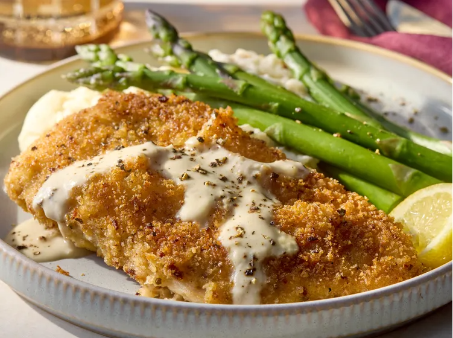

Copycat Chicken Costoletta

Description
In these copycat chicken costoletta breaded, crispy chicken cutlets are paired with a creamy black pepper-lemon-mustard sauce. Serve with charred vegetables and lemon wedge.
Ingredients
- 2 (8-12 ounce) boneless chicken breasts
- 1/2 teaspoon salt
- 3/4 teaspoon freshly ground black pepper, divided
- 1/3 cup all-purpose flour
- 1 large egg
- 2 tablespoons water
- 1/4 cup Italian-seasoned panko bread crumbs
- 1/4 cup freshly grated Parmesan cheese
- 1 teaspoon lemon zest
- 1/4 cup olive oil
- 3 tablespoons salted butter, divided
- 1 clove garlic, minced
- 1 tablespoon all purpose flour
- 1/2 cup whipping cream
- 3/4 cup reduced-sodium chicken broth
- tablespoons lemon juice>
- 1 tablespoon Dijon mustard
Steps
- Gather all ingredients.
- Cut chicken breasts evenly in half horizontally. Place a chicken piece between sheets of plastic wrap. Place on a cutting board. Pound to 1/2-inch thickness with a meat mallet. Repeat with remaining chicken pieces.
- Sprinkle chicken pieces with salt and 1/2 teaspoon pepper.
- Place 1/3 cup flour in a shallow dish. In another shallow dish whisk together egg and water. Combine panko, Parmesan cheese, and lemon zest in another shallow dish.
- Dredge a chicken piece in flour to coat, shaking off excess. Dip in egg mixture to coat. Dredge in panko mixture to coat, patting to adhere. Repeat with remaining chicken pieces.
- Heat olive oil and 2 tablespoons butter in a 12-inch skillet over medium heat. Add chicken pieces and cook until golden brown, 3 to 5 minutes per side. Drain chicken on paper towels. Drain skillet and wipe out any crumbs with a paper towel.
- For sauce, melt remaining 1 tablespoon butter in the skillet over medium heat. Add garlic and cook until fragrant, about 1 minute. Stir in 1 tablespoon flour. Cook and stir for 1 minute. Whisk in chicken broth, cream, lemon juice, Dijon mustard, and remaining 1/4 teaspoon pepper. Cook and stir until thickened and bubbly, about 3 minutes.
- Serve sauce over chicken and enjoy.
Home